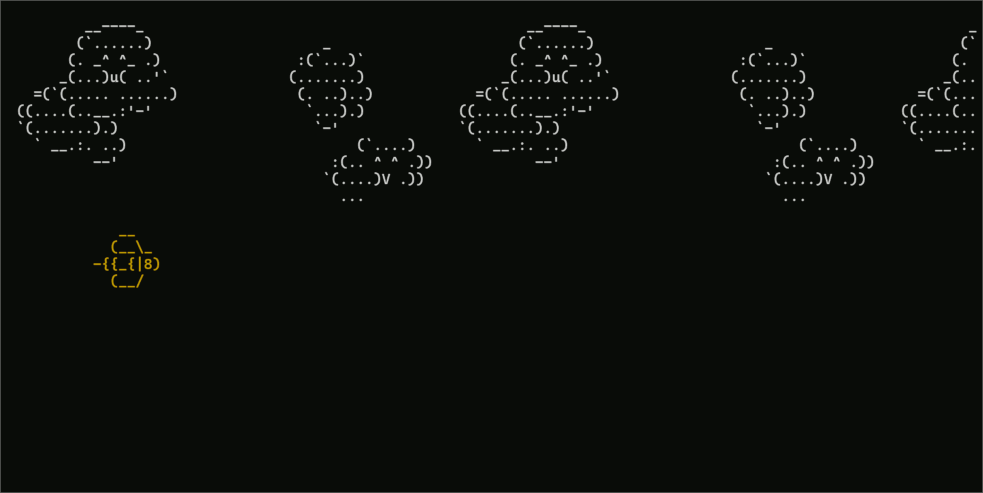

Assignment 3: If you malloc something, set it free
Due Friday, February 6th, before midnight
The goals for this assignment are:
-
Work with malloc/free
-
Work with arrays
-
Work with a C-style systems API
1. Update your repository
Do a git pull to obtain the basecode for this assignment.
Your repository should now contain a new folder named A03.
2. Minesweeper
Implement a program, minesweeper.c, that generates a minesweeper board.
In Minesweeper, each cell can either
contain a bomb or not. Cells without bombs are called safe cells.
Your program should take three command line arguments — m, n, and p — and generate a m x n grid of cells where each cell has probability p of containing a bomb. Then, you program shoul print out the grid using X for bombs and . (period) for safe cells. Finally, your program should output an additional 2D grid with the number of neighboring bombs for each cell (above, below, left, right, NW, NE, SW, SE).
$ make minesweeper
gcc -g -Wall -Wvla -Werror minesweeper.c -o minesweeper
$ ./minesweeper 3 5 0.4
X X . . .
. . . . .
. X . . .
X X 1 0 0
3 3 2 0 0
1 X 1 0 0Requirements/Hints:
-
Use malloc and free to allocate a 2D array to store the grid.
-
Use rand() and srand(time(0)) to create random boards
-
Your program must use command line arguments!
3. NCurses
NCurses is a library for setting text in the terminal. Usually, when we write to terminal, we sequentially append text to the lines that have been output before. However, with the NCurses library, we can easily write and erase characters anywhere on the screen.
In the file, ascii.c, write an NCurses program that draws an animated scene, character, or pattern.

$ make ascii
$ ./asciiRequirements:
-
Your program must include multiple colors
-
Your program should include some animation
-
Search for ASCII art to get some ideas. Make sure your credit any art that you do not make yourself!
Getting started with NCurses
We will the ncurses library to render text to the screen and respond to user input.
The program below initializes a terminal screen, prints "Hello World!",
and exits when the user presses any key. All ncurses applications need to
initialize (initscr) and cleanup (endwin) the terminal at the start and end
of the program.
#include <ncurses.h>
int main()
{
initscr(); /* Start curses mode */
printw("Hello World !!!"); /* Print Hello World */
refresh(); /* Print it on to the real screen */
getch(); /* Wait for user input */
endwin(); /* End curses mode */
return 0;
}4. Grading Rubric
Assignment rubrics
Grades are out of 4 points.
-
(2 point) repeat
-
(0.2 points) style
-
(1.0 points) no memory errors
-
(0.8 points) correct behavior: accepts command line arguments and produces good output
-
-
(2 points) ncurses
-
(0.2 points) style
-
(1.0 points) no memory errors
-
(0.8 points) correct behavior: draws ASCII art using multiple text styles and colors
-
Code rubrics
For full credit, your C programs must be feature-complete, robust (e.g. run without memory errors or crashing) and have good style.
-
Some credit lost for missing features or bugs, depending on severity of error
-
-5% for style errors. See the class coding style here.
-
-50% for memory errors
-
-100% for failure to checkin work to Github
-
-100% for failure to compile on linux using make